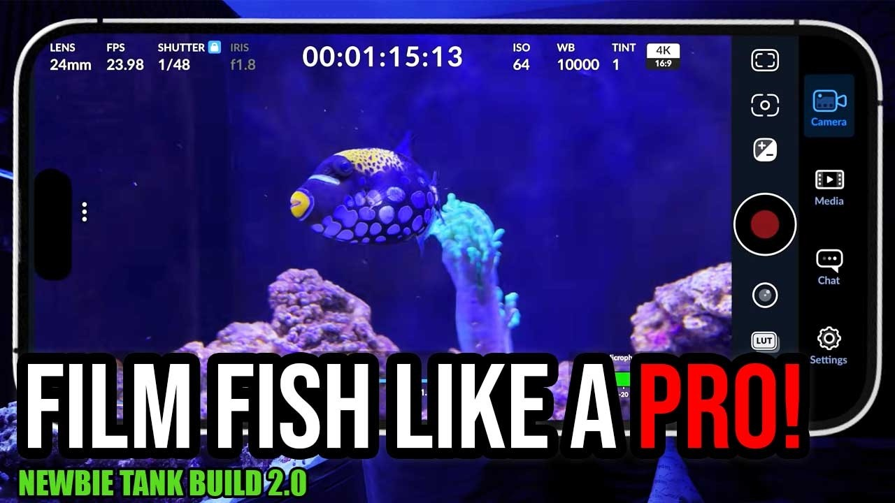

Tuesday, August 18, 2026 · 6 items · back issues
Howdy, it's Isaac again.
Happy Tuesday, reefing family, and welcome back to Weekly Dive.
Here are the biggest things worth knowing:
- INTEGRATED ASSESSMENT OF CORAL REEFS AND REEF FISH ASSEMBLAGES IN KAIMANA MARINE PROTECTED AREAS, WEST PAPUA
- Beyond PAM: digital photography and RGB color analysis as a cost-effective method for coral bleaching assessment
- 📑 #NewStudy by Mamo explores a marine park to see how no-take protection benefits a critically endangered…
- Ridge-to-reef conservation avoids future deforestation and sediment exposure of coral reefs
- Plus 2 more across livestock & corals, community
Let's dive into the news touching our hobby…
Husbandry & Science1
-
Beyond PAM: digital photography and RGB color analysis as a cost-effective method for coral bleaching assessment
Digital photography and color analysis offer a cost-effective alternative to PAM fluorometry for assessing coral bleaching in heat-stress assays. Accessible bleaching-assessment methods enable broader research and better understanding of coral thermal tolerance.
Coral Reefs · Ricardo M. Pedraza-Pohlenz et al. · Aug 15 · doi.org
Livestock & Corals1
-
Seahorses are among the priority species in a new national training program for aquatic wildlife enforcement…
Philippine enforcement training now prioritizes seahorses with dedicated ID guide. Reflects tighter seahorse trade oversight and conservation focus affecting collection and availability.
Project Seahorse — Bluesky · Aug 17 · bsky.app
Wild Reefs3
-
INTEGRATED ASSESSMENT OF CORAL REEFS AND REEF FISH ASSEMBLAGES IN KAIMANA MARINE PROTECTED AREAS, WEST PAPUA
Survey of coral and reef-fish assemblages in Kaimana Marine Protected Areas (Papua Barat) across three monitoring periods (2012–2019). Establishes baseline reef health and composition data critical to understanding wild reef condition and conservation effectiveness.
Jurnal Teknologi Perikanan dan Kelautan · Roni Bawole et al. · Aug 18 · doi.org
-
📑 #NewStudy by Mamo explores a marine park to see how no-take protection benefits a critically endangered…
Study shows no-take marine protection benefits a critically endangered shark and its fish prey. Demonstrates MPA effectiveness for conservation; relevant to understanding wild reef recovery and trade-regulation context.
Australian Society for Fish Biology — Bluesky · Aug 17 · bsky.app
-
Ridge-to-reef conservation avoids future deforestation and sediment exposure of coral reefs
Ridge-to-reef modeling links tropical deforestation to downstream coral-reef sediment stress and degradation. Understanding cross-realm threats to wild reefs informs conservation priorities and reef physiology.
Biological Conservation · Dominic Muenzel et al. · Aug 16 · doi.org
Resource

How to Film Aquarium Fish Like a Pro with Your Smartphone! | Newbie Tank Build 2.0Smartphone videography techniques for aquarium fish and corals, including lighting, filtering, and stabilization. Helpful community content but instructional in nature rather than news-driven.
27 min SaltwaterAquarium.com · SaltwaterAquarium · Aug 18 · youtube.com